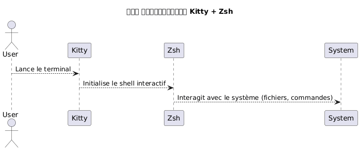
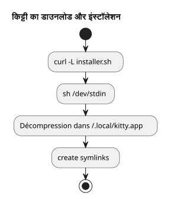
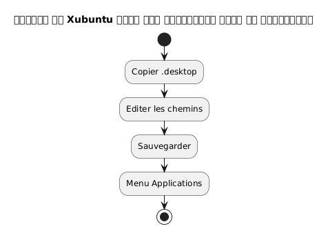
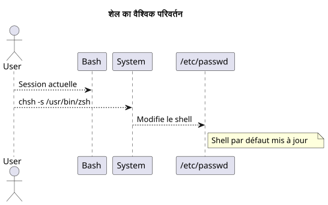
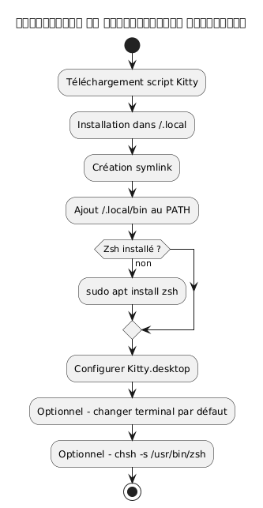
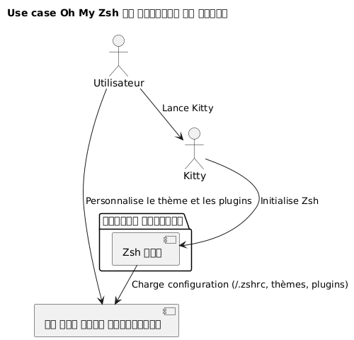
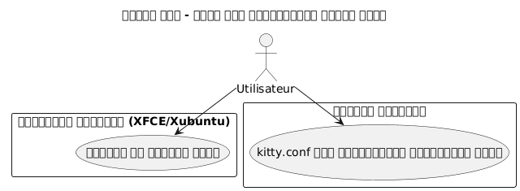
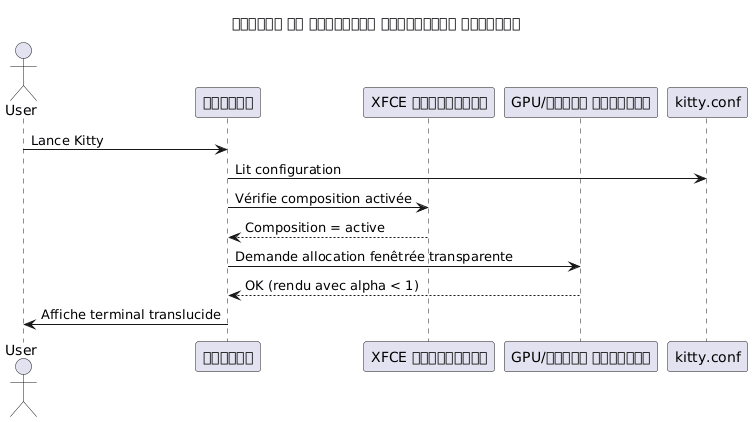

Kitty टर्मिनल स्थापित करें और Zsh को डिफ़ॉल्ट शेल के रूप में कॉन्फ़िगर करें Xubuntu पर
Publié le 07 May 2026 Mis à jour le 2026-05-07
- किट्टी और Zsh क्यों चुनें ?
- सिस्टम आवश्यकताएँ
- Kitty का डाउनलोड और इंस्टॉलेशन
- Xubuntu में Kitty का एकीकरण
- Zsh की स्थापना
- Zsh को डिफ़ॉल्ट शेल के रूप में सेट करें
- Zsh की कॉन्फ़िगरेशन (वैकल्पिक)
- वर्कफ़्लो का पूर्ण सारांश
- अंतिम सत्यापन
- Oh My Zsh की स्थापना और कॉन्फ़िगरेशन
- Bake (generate) the site jbake -b
- Bake and serve locally jbake -b -s
- Bake and watch for changes jbake -b --reset
- Specify source and destination jbake source_folder output_folder
- Clear the output directory before baking jbake -b . output --reset
`
यह गाइड चरण दर चरण बताता है कि Xubuntu पर kitty टर्मिनल कैसे स्थापित करें, इसे सही तरीके से कॉन्फ़िगर करें, और bash को डिफ़ॉल्ट शेल के रूप में zsh से बदलें। किट्टी प्रोजेक्ट यहाँ उपलब्ध है : https://github.com/kovidgoyal/kitty.
(No output) Kitty एक आधुनिक, तेज़ और कॉन्फ़िगरेबल टर्मिनल है, जो विशेष रूप से मांग वाले डेवलपर्स के लिए उपयुक्त है। __
किट्टी और Zsh क्यों चुनें ?
Kitty की पहचान:
-
जीपीयू त्वरण के कारण उच्च प्रदर्शन,
-
एक ही पाठ फ़ाइल पर पूरी तरह आधारित कॉन्फ़िगरेशन,
-
फ़ॉन्ट और लिगेचर के लिए उत्कृष्ट समर्थन।
Zsh, इसके विपरीत, एक शक्तिशाली इंटरैक्टिव शेल है जो प्रदान करता है :
-
एक बुद्धिमान पूर्णता,
-
एक अनुकूलन योग्य प्रॉम्प्ट,
-
बैश के साथ उच्च संगतता।
Kitty और Zsh को जोड़ने से, आपको एक उत्पादक और सुंदर वातावरण मिलता है।

|
यह गाइड जानबूझकर स्क्रिप्ट के माध्यम से स्थापना और केवल Xubuntu तक सीमित है। |
सिस्टम आवश्यकताएँ
शुरू करने से पहले, सुनिश्चित करें कि आपके पास है:
-
Xubuntu स्थापित,
-
इंटरनेट तक पहुँच,
-
स्क्रिप्ट चलाने के लिए एक कार्यशील बश शेल.
अपना पर्यावरण जाँचें:
uname -a
lsb_release -aKitty का डाउनलोड और इंस्टॉलेशन
किट्टी इसे एक आधिकारिक स्क्रिप्ट के माध्यम से इंस्टॉल करने की सिफारिश करता है जो फ़ाइलों को रखता है`~/.local/kitty.app`.
|
यह विधि पैकेज प्रबंधकों से स्वतंत्र है (कोई नहीं`apt`). |
इंस्टॉलेशन स्क्रिप्ट डाउनलोड करें
निम्नलिखित कमांड चलाएँ :
curl -L https://sw.kovidgoyal.net/kitty/installer.sh | sh /dev/stdinयह कमांड निम्नलिखित करती है :
-
बाइनरीज़ का डाउनलोड,
-
निष्कर्षण में`~/.local/kitty.app`,
-
सांकेतिक लिंक बनाना।

सांकेतिक लिंक बनाना
आह्वान कर सकने के लिए`kitty`टर्मिनल से, एक सिम्बॉलिक लिंक बनाएँ :
ln -s ~/.local/kitty.app/bin/kitty ~/.local/bin/kittyजोड़ें`~/.local/bin`अपने PATH में जोड़ें यदि अभी तक नहीं किया गया है :
echo 'export PATH="$HOME/.local/bin:$PATH"' >> ~/.zshrc
source ~/.zshrcआप स्थापना की जाँच कर सकते हैं :
kitty --versionXubuntu में Kitty का एकीकरण
किट्टी को एप्लिकेशन मेन्यू में दिखाने के लिए :
फ़ाइल को डेस्कटॉप पर कॉपी करें
फ़ाइल कॉपी करें`.desktop`दिया गया:
cp ~/.local/kitty.app/share/applications/kitty.desktop ~/.local/share/applications/डेस्कटॉप फ़ाइल संपादित करें
फ़ाइल संपादित करें:
nano ~/.local/share/applications/kitty.desktopनिम्नलिखित लाइनों की जाँच करें या संपादित करें:
[Desktop Entry]
Version=1.0
Type=Application
Name=Kitty Terminal
Comment=Fast GPU-based terminal emulator
Exec=/home/$USER/.local/kitty.app/bin/kitty
Icon=kitty
Categories=System;TerminalEmulator;बदलें`YOURUSER`आपके उपयोगकर्ता नाम से.

Kitty को डिफ़ॉल्ट टर्मिनल के रूप में जोड़ें (वैकल्पिक)
Kitty को डिफ़ॉल्ट टर्मिनल के रूप में लॉन्च करने के लिए :
sudo update-alternatives --install /usr/bin/x-terminal-emulator x-terminal-emulator ~/.local/kitty.app/bin/kitty 50
sudo update-alternatives --config x-terminal-emulatorचुनें`kitty`प्रस्तावित मेनू में
Zsh की स्थापना
यदि Zsh अभी तक स्थापित नहीं है, निष्पादित करें :
sudo apt install zshस्थापना की जाँच करें :
zsh --versionZsh को डिफ़ॉल्ट शेल के रूप में सेट करें
आप अपने शेल को ग्लोबल रूप से बदल सकते हैं या केवल Kitty में।
वैश्विक पद्धति (सभी टर्मिनल के लिए)
निरपेक्ष पथ पहचानें :
which zshसामान्यतः`/usr/bin/zsh`.
डिफ़ॉल्ट शेल बदलें :
chsh -s /usr/bin/zshलॉग आउट करें और फिर से लॉग इन करें।

Kitty के लिए विशिष्ट विधि
यदि आप केवल किट्टी में शेल बदलना पसंद करते हैं, तो कॉन्फ़िगरेशन फ़ाइल को संपादित करें:
nano ~/.config/kitty/kitty.confइस पंक्ति जोड़ें:
shell zshसहेजें और किट्टी को पुनः प्रारंभ करें।
Zsh की कॉन्फ़िगरेशन (वैकल्पिक)
अपने Zsh को अनुकूलित करने के लिए:
एक .zshrc फ़ाइल बनाएँ
touch ~/.zshrc
nano ~/.zshrcExemple de configuration minimale
export ZSH_THEME="robbyrussell"
export PATH="$HOME/.local/bin:$PATH"
alias ll="ls -la"वर्कफ़्लो का पूर्ण सारांश
नीचे दिया गया चित्र पूरे प्रक्रिया का सारांश प्रस्तुत करता है:

अंतिम सत्यापन
Kitty लॉन्च करें:
kittyआपको वह देखना चाहिए`zsh`सक्रिय है :
echo $SHELLअपेक्षित परिणाम:
/usr/bin/zsh
फ़ॉन्ट का आकार बदलने के लिएKitty, पैरामीटर को समायोजित करना होगा`font_size`कॉन्फ़िगरेशन फ़ाइल में. यहाँ विस्तृत प्रक्रिया है:
📂 कॉन्फ़िगरेशन फ़ाइल खोलें
मुख्य कॉन्फ़िगरेशन फ़ाइल आमतौर पर स्थित होती है :
~/.config/kitty/kitty.confयदि यह फ़ाइल अभी तक मौजूद नहीं है, तो आप इसे बना सकते हैं। उदाहरण:
nano ~/.config/kitty/kitty.conf🖋️ जोड़ें या संपादित करें `font_size
निम्नलिखित निर्देश जोड़ें, यदि यह पहले से मौजूद हो तो इसे संशोधित करें:
font_size 14.0यहाँ`14.0`इच्छित आकार के अनुरूप है। आप कोई भी दशमलव मान डाल सकते हैं, उदाहरण के लिए`12.0`, 15.5, etc.
�💾 Kitty को सहेजें और पुनः प्रारंभ करें
-
सहेजें (
Ctrl + O, फिर`Entrée`) और बंद करें (Ctrl + X) यदि आप उपयोग करते हैं`nano`. -
किट्टी की सभी विंडो बंद करें, फिर टर्मिनल को रीलॉन्च करें ताकि परिवर्तन प्रभावी हो सके।
✅ गतिशील समायोजन (अस्थायी ज़ूम)
यदि आप अस्थायी रूप से ज़ूम इन/आउट करना चाहते हैं बिना कॉन्फ़िगरेशन को संशोधित किए, डिफ़ॉल्ट कीबोर्ड शॉर्टकट्स का उपयोग करें :
-
फ़ॉन्ट का आकार बढ़ाएँ:
Ctrl + Shift + =
-
फ़ॉन्ट का आकार कम करें:
Ctrl + Shift + -
-
आकार रीसेट करें:
Ctrl + Shift + Backspace
इन सेटिंग्स टर्मिनल बंद होने के बाद बनी नहीं रहती।
Oh My Zsh की स्थापना और कॉन्फ़िगरेशन
एक बार जब Zsh स्थापित और डिफ़ॉल्ट शेल के रूप में कॉन्फ़िगर हो जाए, तो आप Oh My Zsh के साथ अपने वातावरण को समृद्ध कर सकते हैं, जो Zsh कॉन्फ़िगरेशन प्रबंधन का एक फ्रेमवर्क है, जो प्रदान करता है:
-
प्रॉम्प्ट के लिए विषयों का एक संग्रह,
-
बहुत से प्लगइन,
-
कॉन्फ़िगरेशन की स्पष्ट व्यवस्था
Oh My Zsh का इंस्टॉलेशन
JBake CLI Commands ` # Initialize a new JBake project jbake -i
Bake (generate) the site jbake -b
Bake and serve locally jbake -b -s
Bake and watch for changes jbake -b --reset
Specify source and destination jbake source_folder output_folder
Clear the output directory before baking jbake -b . output --reset `
ज़ैश सक्रिय है सुनिश्चित करें :
zsh --versionयदि आवश्यक हो, तो लॉन्च करें
zshफिर आधिकारिक इंस्टॉलेशन स्क्रिप्ट डाउनलोड करें और चलाएँ:
sh -c "$(curl -fsSL https://raw.githubusercontent.com/ohmyzsh/ohmyzsh/master/tools/install.sh)"यह स्क्रिप्ट :
-
फ़ोल्डर बनाओ`~/.oh-my-zsh`,
-
आप संभवतः अपनी फ़ाइल को सेव कर सकते हैं`~/.zshrc`,
-
नए प्रॉम्प्ट को स्वचालित रूप से सक्रिय करता है।
थीम बदलें
अपने कॉन्फ़िगरेशन फ़ाइल खोलें :
nano ~/.zshrcVariable को संशोधित करें`ZSH_THEME`अन्य विषय चुनने के लिए (उदाहरण के लिए`agnoster`) :
ZSH_THEME="agnoster
सहेजें और फिर कॉन्फ़िगरेशन को फिर से लोड करें :
source ~/.zshrcसत्यापन
Kitty लॉन्च करें और जाँचें कि प्रॉम्प्ट ठीक से बदल गया है। आप Oh My Zsh के सक्रिय होने की पुष्टि निम्न कमांड चलाकर कर सकते हैं :
echo $ZSHपरिणाम समान होना चाहिए:
/home/आपका_उपयोगकर्ता/.oh-my-zsh
यूज़ केस डायग्राम

Kitty में पारदर्शिता सक्षम करें
Kitty की सबसे सराहनीय सुविधाओं में से एक टर्मिनल के पृष्ठभूमि में पारदर्शिता जोड़ने की क्षमता है। यह आपको अंतर्निहित वातावरण (खिड़की, डेस्कटॉप, आदि) को हल्के से देखने की अनुमति देता है, जो मल्टीटास्किंग में विशेष रूप से उपयोगी है।
पारदर्शिता के लिए पूर्वापेक्षा
Kitty में पारदर्शिता पर आधारित हैविंडो कंपोज़रग्राफिकल वातावरण द्वारा उपयोग किया गया। XFCE आधारित Xubuntu पर, सुनिश्चित करें कि वहसंरचना सक्रिय है.
-
डेस्कटॉप पर राइट‑क्लिक > सेटिंग्स >विंडो प्रबंधक सेटिंग्स,
-
टैबसंगीतकार: बॉक्स "संयोजन सक्षम करें" चेक किया जाना चाहिए।

kitty.conf में पारदर्शिता की कॉन्फ़िगरेशन
अपनी कॉन्फ़िगरेशन फ़ाइल खोलें`~/.config/kitty/kitty.conf`:
nano ~/.config/kitty/kitty.confनिम्नलिखित पंक्तियों को जोड़ें या संशोधित करें :
background_opacity 0.85यह पैरामीटर मानों के बीच स्वीकार करता है :
-
1.0→ अपरदर्शी (कोई पारदर्शिता नहीं), -
0.0→ पूरी तरह से पारदर्शी (उपयोग नहीं किया जा सकता) -
मध्यवर्ती मान जैसे`0.90`,
0.75, etc.
एक अच्छा दृश्य समझौता आमतौर पर बीच में होता है`0.85` et 0.95.
किटी को रीस्टार्ट करें
किट्टी के सभी उदाहरण बंद करें, फिर एक नई विंडो लॉन्च करें ताकि परिवर्तन प्रभावी हो सकें :
kittyसंभावित पूरक
यदि आप एक कस्टम टर्मिनल पृष्ठभूमि का उपयोग करते हैं, तो आप एक पारदर्शी पृष्ठभूमि रंग (RGBA में) भी सेट कर सकते हैं :
background #1e1e2effअंतिम घटक(ff) अपारदर्शिता दर्शाता है (de`00` à ff).
सीक्वेंस डायग्राम - पारदर्शिता के साथ किट्टी का प्रारंभ

ज्ञात सीमाएँ
|
पारदर्शिता काम नहीं करती यदि: - XFCE कंपोज़र निष्क्रिय है, - असंगत विंडो प्रबंधक उपयोग किया जा रहा है, - आप Kitty का उपयोग कर रहे हैं बैकग्राउंड में एक tmux मोड में, पारदर्शिता समर्थन के बिना। |
ध्वनि बीप (सुनाई देने वाली घंटी) को बंद करें
डिफ़ॉल्ट रूप से, Kitty गलत कमांड दर्ज किए जाने या टर्मिनल घटना द्वारा ट्रिगर होने पर bip ध्वनि उत्पन्न करता है। यह शोर तेजी से परेशान करने वाला हो सकता है, विशेषकर एक गहन विकास पर्यावरण में।
इस व्यवहार को अक्षम करने के लिए, फ़ाइल में निम्नलिखित निर्देश जोड़ें।~/.config/kitty/kitty.conf:
audible_bell no|
आप दृश्य प्रतिक्रिया को भी ध्वनि बीप के बजाय सक्रिय कर सकते हैं: |
किट्टी का अपडेट
क्योंकि Kitty को एक स्क्रिप्ट के माध्यम से स्थापित किया गया है और किसी पैकेज प्रबंधक के माध्यम से नहीं, अपडेट को आधिकारिक इंस्टॉलेशन स्क्रिप्ट को फिर से चलाकर किया जाता है। इससे आपको नवीनतम संस्करण डाउनलोड करने और अपनी मौजूदा स्थापना को अपडेट करने की अनुमति मिलती है में`~/.local/kitty.app`.
|
प्रत्यय`.app`पथ में`~/.local/kitty.app`यह लिनक्स पर किट्टी की आधिकारिक स्क्रिप्ट के माध्यम से स्थापना की प्रथा है, और यह किसी भी तरह से मैकओएस के साथ विशेष संगतता को दर्शाता नहीं है। |
|
अपडेट कमांड चलाने से पहले, सुनिश्चित करें कि आप अपने होम निर्देशिका में हैं ( |
अपने होम निर्देशिका से निम्नलिखित कमांड चलाएँ :
curl -L https://sw.kovidgoyal.net/kitty/installer.sh | sh /dev/stdinयह स्क्रिप्ट संभालेगा :
-
नए संस्करण के बाइनरी डाउनलोड करें
-
Extraire les fichiers dans
~/.local/kitty.app. -
यदि आवश्यक हो तो सिम्बॉलिक लिंक को अपडेट करें।
अद्यतन के बाद, सभी किट्टी इंस्टेंस को बंद करने और उन्हें फिर से शुरू करने की सिफारिश की जाती है ताकि यह सुनिश्चित किया जा सके कि नया संस्करण सही ढंग से लागू हो।
संदर्भ
यदि आप वैयक्तिकरण को गहरा करना चाहते हैं, तो आधिकारिक दस्तावेज़ देखें :
निष्कर्ष
अब आपके पास :
-
एक आधुनिक और उच्च प्रदर्शन वाला टर्मिनल (Kitty)
-
एक शक्तिशाली और अनुकूलन योग्य शेल (Zsh) का
-
एक स्वच्छ कॉन्फ़िगरेशन जो सिस्टम पैकेज से स्वतंत्र है
-
एक सुंदर और कार्यात्मक टर्मिनल जो Oh My Zsh से सुसज्जित है